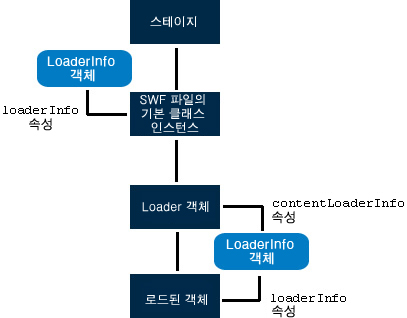

| 패키지 | flash.display |
| 클래스 | public class LoaderInfo |
| 상속 | LoaderInfo |
| 언어 버전: | ActionScript 3.0 |
| 런타임 버전: | AIR 1.0, Flash Player 9, Flash Lite 4 |
두 가지 방법으로 LoaderInfo 객체에 액세스할 수 있습니다.
- flash.display.Loader 객체의
contentLoaderInfo속성 -contentLoaderInfo속성은 모든 Loader 객체에서 언제든지 사용할 수 있습니다.load()또는loadBytes()메서드를 호출하지 않았거나 제대로 로드되지 않은 Loader 객체의 경우,contentLoaderInfo속성의 여러 속성에 액세스하려고 시도하면 오류가 발생합니다. - 표시 객체의
loaderInfo속성
Loader 객체의 contentLoaderInfo 속성은 Loader 객체가 로드 중인 내용에 대한 정보를 제공하는 반면, DisplayObject 의 loaderInfo 속성은 해당 표시 객체의 루트 SWF 파일에 대한 정보를 제공합니다.
Loader 객체를 사용하여 SWF 파일이나 비트맵 등의 표시 객체를 로드할 때 표시 객체의 loaderInfo 속성은 Loader 객체의 contentLoaderInfo 속성과 같습니다. 즉 DisplayObject.loaderInfo = Loader.contentLoaderInfo입니다. SWF 파일의 기본 클래스 인스턴스에 Loader 객체가 없으므로 loaderInfo 속성이 SWF 파일 기본 클래스 인스턴스의 LoaderInfo에 액세스할 수 있는 유일한 방법입니다.
다음 다이어그램에서는 LoaderInfo 객체의 여러 가지 용도, 즉 SWF 파일의 기본 클래스 인스턴스, Loader 객체의 contentLoaderInfo 속성, 로드된 객체의 loaderInfo 속성으로 사용되는 것을 보여 줍니다.

로딩 작업이 완료되지 않았을 때 Loader 객체의 contentLoaderInfo 속성에서 일부 속성은 사용할 수 없습니다. bytesLoaded, bytesTotal, url, loaderURL 및 applicationDomain과 같은 일부 속성은 얻을 수 있습니다. loaderInfo 객체가 init 이벤트를 전달할 때 loaderInfo 객체 및 로드된 이미지 또는 SWF 파일의 모든 속성에 액세스할 수 있습니다.
참고: LoaderInfo 객체의 모든 속성은 읽기 전용입니다.
EventDispatcher.dispatchEvent() 메서드는 LoaderInfo 객체에 적용할 수 없습니다. LoaderInfo 객체에서 dispatchEvent()를 호출하면 IllegalOperationError 예외가 발생합니다.
관련 API 요소
flash.display.Loader.content
flash.display.DisplayObject
flash.display.DisplayObject.loaderInfo
 상속되는 공용 속성 숨기기
상속되는 공용 속성 숨기기 상속되는 공용 속성 표시
상속되는 공용 속성 표시| 속성 | 정의 주체 | ||
|---|---|---|---|
| actionScriptVersion : uint [읽기 전용]
로드된 SWF 파일의 ActionScript 버전입니다. | LoaderInfo | ||
| applicationDomain : ApplicationDomain [읽기 전용]
외부 SWF 파일을 로드할 때, 로드된 클래스에 포함된 모든 ActionScript 3.0 정의는 applicationDomain 속성에 저장됩니다. | LoaderInfo | ||
| bytes : ByteArray [읽기 전용]
LoaderInfo 객체와 연관된 바이트입니다. | LoaderInfo | ||
| bytesLoaded : uint [읽기 전용]
해당 미디어에 대해 로드된 바이트 수입니다. | LoaderInfo | ||
| bytesTotal : uint [읽기 전용]
전체 미디어 파일에서 압축된 바이트 수입니다. | LoaderInfo | ||
| childAllowsParent : Boolean [읽기 전용]
내용(자식)의 로더(부모)에 대한 신뢰 관계를 표현합니다. | LoaderInfo | ||
| childSandboxBridge : Object
로드된 내용의 코드로 설정하여 속성을 표시할 수 있는 객체이며 Loader 객체의 샌드박스에 있는 코드로 액세스할 수 있는 메서드입니다. | LoaderInfo | ||
 | constructor : Object
지정된 객체 인스턴스의 클래스 객체 또는 생성자 함수에 대한 참조입니다. | Object | |
| content : DisplayObject [읽기 전용]
이 LoaderInfo 객체와 연관된 로드된 객체입니다. | LoaderInfo | ||
| contentType : String [읽기 전용]
로드된 파일의 MIME 유형입니다. | LoaderInfo | ||
| frameRate : Number [읽기 전용]
로드된 SWF 파일의 공칭 프레임 속도(초당 프레임 수)입니다. | LoaderInfo | ||
| height : int [읽기 전용]
로드된 파일의 공칭 높이입니다. | LoaderInfo | ||
| isURLInaccessible : Boolean [읽기 전용]
LoaderInfo.url 속성이 잘렸는지 여부를 나타냅니다. | LoaderInfo | ||
| loader : Loader [읽기 전용]
이 LoaderInfo 객체와 연관된 Loader 객체입니다. | LoaderInfo | ||
| loaderURL : String [읽기 전용]
이 LoaderInfo 객체가 설명하는 미디어의 로딩을 시작한 SWF 파일의 URL입니다. | LoaderInfo | ||
| parameters : Object [읽기 전용]
로드된 SWF 파일에 제공된 매개 변수를 나타내는 이름 값 쌍이 포함된 객체입니다. | LoaderInfo | ||
| parentAllowsChild : Boolean [읽기 전용]
Loader(부모)의 내용(자식)에 대한 신뢰 관계를 표현합니다. | LoaderInfo | ||
| parentSandboxBridge : Object
Loader 객체의 샌드박스에 있는 코드로 설정하여 속성을 표시할 수 있는 객체이며 로드된 내용의 코드로 액세스할 수 있는 메서드입니다. | LoaderInfo | ||
| sameDomain : Boolean [읽기 전용]
로더와 내용 간의 도메인 관계를 표현합니다. 원래 도메인이 동일하면 true이고, 그렇지 않으면 false입니다. | LoaderInfo | ||
| sharedEvents : EventDispatcher [읽기 전용]
보안 경계선 너머로 이벤트를 교환하는 데 사용할 수 있는 EventDispatcher 인스턴스입니다. | LoaderInfo | ||
| swfVersion : uint [읽기 전용]
로드된 SWF 파일의 파일 형식 버전입니다. | LoaderInfo | ||
| uncaughtErrorEvents : UncaughtErrorEvents [읽기 전용]
이 LoaderInfo 객체의 SWF 파일의 코드에서 처리되지 않은 오류가 발생하는 경우 uncaughtError 이벤트를 전달하는 객체입니다. | LoaderInfo | ||
| url : String [읽기 전용]
로드 중인 미디어의 URL입니다. | LoaderInfo | ||
| width : int [읽기 전용]
로드된 내용의 공칭 폭입니다. | LoaderInfo | ||
| 메서드 | 정의 주체 | ||
|---|---|---|---|
| addEventListener(type:String, listener:Function, useCapture:Boolean = false, priority:int = 0, useWeakReference:Boolean = false):void
리스너에서 이벤트 알림을 받을 수 있도록 EventDispatcher 객체에 이벤트 리스너 객체를 등록합니다. | EventDispatcher | |
[정적]
객체로 정의된 SWF 파일과 연관된 LoaderInfo 객체를 반환합니다. | LoaderInfo | ||
|
EventDispatcher 객체에 특정 유형의 이벤트에 대한 리스너가 등록되어 있는지 여부를 확인합니다. | EventDispatcher | |
|
지정된 속성이 객체에 정의되어 있는지 여부를 나타냅니다. | Object | |
|
Object 클래스의 인스턴스가 매개 변수로 지정된 객체의 프로토타입 체인에 있는지 여부를 나타냅니다. | Object | |
|
지정된 속성이 존재하고 열거 가능한지 여부를 나타냅니다. | Object | |
|
EventDispatcher 객체에서 리스너를 제거합니다. | EventDispatcher | |
|
루프 작업에서 동적 속성을 사용할 수 있는지 여부를 설정합니다. | Object | |
|
로캘별 규칙에 따라 서식이 지정된 이 객체의 문자열 표현을 반환합니다. | Object | |
|
지정된 객체의 문자열 표현을 반환합니다. | Object | |
|
지정된 객체의 프리미티브 값을 반환합니다. | Object | |
|
이 EventDispatcher 객체 또는 조상 객체에 지정한 이벤트 유형에 대한 이벤트 리스너가 등록되어 있는지 여부를 확인합니다. | EventDispatcher | |
| 이벤트 | 요약 | 정의 주체 | ||
|---|---|---|---|---|
| [브로드캐스트 이벤트] Flash Player 또는 AIR 응용 프로그램이 운영 체제 포커스를 얻어 활성화될 때 전달됩니다. | EventDispatcher | ||
| 데이터가 성공적으로 로드되면 전달됩니다. | LoaderInfo | |||
| [브로드캐스트 이벤트] Flash Player 또는 AIR 응용 프로그램이 운영 체제 포커스를 잃고 비활성화될 때 전달됩니다. | EventDispatcher | ||
| HTTP를 통해 네트워크 요청이 이루어지고 HTTP 상태 코드를 감지할 수 있을 때 전달됩니다. | LoaderInfo | |||
| 로드된 SWF 파일의 속성 및 메서드에 액세스할 수 있으며 사용할 준비가 되었을 때 전달됩니다. | LoaderInfo | |||
| 로드 작업 실패를 유발하는 입력 또는 출력 오류가 발생할 때 전달됩니다. | LoaderInfo | |||
| 로드 작업이 시작될 때 전달됩니다. | LoaderInfo | |||
| 다운로드 작업이 진행되어 데이터가 수신될 때 전달됩니다. | LoaderInfo | |||
| Loader 객체의 unload() 메서드를 사용하여 로드된 객체를 제거할 때마다, 또는 동일한 Loader 객체가 두 번째 로드를 실행하기 위해 먼저 원본 내용을 제거할 때 LoaderInfo 객체에 의해 전달됩니다. | LoaderInfo | |||
actionScriptVersion | 속성 |
actionScriptVersion:uint [읽기 전용] | 언어 버전: | ActionScript 3.0 |
| 런타임 버전: | AIR 1.0, Flash Player 9, Flash Lite 4 |
로드된 SWF 파일의 ActionScript 버전입니다. 언어 버전은 ActionScriptVersion.ACTIONSCRIPT2 및 ActionScriptVersion.ACTIONSCRIPT3과 같이 ActionScriptVersion 클래스의 열거 유형을 사용하여 지정됩니다.
참고: 이 속성은 항상 ActionScriptVersion.ACTIONSCRIPT2 또는 ActionScriptVersion.ACTIONSCRIPT3 중 하나를 값으로 갖습니다. ActionScript 1.0 및 2.0 모두 ActionScriptVersion.ACTIONSCRIPT2(버전 2.0)로 보고됩니다. 이 속성에서는 ActionScript 1.0 및 2.0을 ActionScript 3.0과 구분할 뿐입니다.
구현
public function get actionScriptVersion():uint오류
Error — 요청한 정보를 검색할 수 있을 만큼 파일이 다운로드되지 않은 경우입니다.
| |
Error — 파일이 SWF 파일이 아닌 경우입니다.
|
관련 API 요소
applicationDomain | 속성 |
applicationDomain:ApplicationDomain [읽기 전용] | 언어 버전: | ActionScript 3.0 |
| 런타임 버전: | AIR 1.0, Flash Player 9, Flash Lite 4 |
외부 SWF 파일을 로드할 때, 로드된 클래스에 포함된 모든 ActionScript 3.0 정의는 applicationDomain 속성에 저장됩니다.
SWF 파일의 모든 코드는 응용 프로그램 도메인에 존재하도록 정의됩니다. 현재 응용 프로그램 도메인은 주 응용 프로그램이 실행되는 위치입니다. 시스템 도메인에는 현재 도메인과 Flash Player 또는 Adobe AIR에서 사용되는 모든 클래스를 비롯하여 모든 응용 프로그램 도메인이 들어 있습니다.
시스템 도메인을 제외한 모든 응용 프로그램 도메인에는 연관된 부모 도메인이 있습니다. 기본 응용 프로그램 applicationDomain의 부모 도메인은 시스템 도메인입니다. 로드된 클래스는 부모에서 아직 정의되지 않은 경우에만 정의됩니다. 로드된 클래스 정의를 새 정의를 사용하여 재정의할 수는 없습니다.
응용 프로그램 도메인 사용법 관련 예제는 ActionScript 3.0 개발자 가이드의 "클라이언트 시스템 환경" 장을 참조하십시오.
구현
public function get applicationDomain():ApplicationDomain오류
SecurityError — 호출자의 이 보안 샌드박스는 이 ApplicationDomain에 액세스할 수 없습니다.
|
관련 API 요소
bytes | 속성 |
bytes:ByteArray [읽기 전용] | 언어 버전: | ActionScript 3.0 |
| 런타임 버전: | AIR 1.0, Flash Player 9.0.115.0, Flash Lite 4 |
LoaderInfo 객체와 연관된 바이트입니다.
구현
public function get bytes():ByteArray오류
SecurityError — 이 API에 액세스하는 객체가 보안 제한 사항 때문에 로드된 객체에 액세스할 수 없는 경우입니다. 예를 들어 Loader 객체가 contentLoaderInfo.content 속성에 대한 액세스를 시도하는데 로드된 내용에 액세스할 수 있는 보안 권한이 부여되지 않은 경우에 해당됩니다.
보안에 대한 자세한 내용은 Flash Player 개발자 센터 항목: 보안을 참조하십시오. |
bytesLoaded | 속성 |
bytesTotal | 속성 |
bytesTotal:uint [읽기 전용] | 언어 버전: | ActionScript 3.0 |
| 런타임 버전: | AIR 1.0, Flash Player 9, Flash Lite 4 |
전체 미디어 파일에서 압축된 바이트 수입니다.
이 LoaderInfo 객체의 Loader 객체가 첫 번째 progress 이벤트를 전달하기 전에 bytesTotal은 0입니다. Loader 객체에서 첫 번째 progress 이벤트 발생 후 bytesTotal에서 다운로드할 실제 바이트 수가 반영됩니다.
참고(iOS에만 해당): 응용 프로그램을 iOS에서 실행하는 경우 반환되는 값은 다른 플랫폼의 경우와 같지 않습니다.
구현
public function get bytesTotal():uint관련 API 요소
childAllowsParent | 속성 |
childAllowsParent:Boolean [읽기 전용] | 언어 버전: | ActionScript 3.0 |
| 런타임 버전: | AIR 1.0, Flash Player 9, Flash Lite 4 |
내용(자식)의 로더(부모)에 대한 신뢰 관계를 표현합니다. 자식이 부모의 액세스를 허용한 경우 true이며, 그렇지 않으면 false입니다. 이 속성이 true로 설정되는 경우는 자식 객체가 allowDomain() 메서드를 호출하여 부모 도메인에게 권한을 부여한 경우 또는 자식 도메인에서 URL 정책이 로드되어 부모 도메인에게 권한이 부여된 경우입니다. 부모와 자식이 같은 도메인에 있으면 이 속성은 true로 설정됩니다.
보안에 대한 자세한 내용은 Flash Player 개발자 센터 항목: 보안을 참조하십시오.
구현
public function get childAllowsParent():Boolean오류
Error — 요청한 정보를 검색할 수 있을 만큼 파일이 다운로드되지 않았을 때 발생합니다.
|
childSandboxBridge | 속성 |
childSandboxBridge:Object| 런타임 버전: | AIR 1.0, Flash Player 11.4, Flash Lite 4 |
로드된 내용의 코드로 설정하여 속성을 표시할 수 있는 객체이며 Loader 객체의 샌드박스에 있는 코드로 액세스할 수 있는 메서드입니다. 이 샌드박스 브리지를 사용하면 비응용 프로그램 도메인의 내용으로 응용 프로그램 샌드박스의 스크립트에 대한 액세스를 제어할 수 있으며 반대로도 가능합니다. 샌드박스 브리지는 응용 프로그램과 비응용 프로그램 보안 샌드박스 간에 명시적 상호 작용을 제공하며 샌드박스 간의 게이트웨이 역할을 합니다.
구현
public function get childSandboxBridge():Object public function set childSandboxBridge(value:Object):void오류
SecurityError — 로드된 내용의 샌드박스에 있는 내용만이 이 속성을 설정할 수 있습니다.
|
관련 API 요소
content | 속성 |
content:DisplayObject [읽기 전용] | 언어 버전: | ActionScript 3.0 |
| 런타임 버전: | AIR 1.0, Flash Player 9, Flash Lite 4 |
이 LoaderInfo 객체와 연관된 로드된 객체입니다.
구현
public function get content():DisplayObject오류
SecurityError — 이 API에 액세스하는 객체가 보안 제한 사항 때문에 로드된 객체에 액세스할 수 없는 경우입니다. 예를 들어 Loader 객체가 contentLoaderInfo.content 속성에 대한 액세스를 시도하는데 로드된 내용에 액세스할 수 있는 보안 권한이 부여되지 않은 경우에 해당됩니다.
보안에 대한 자세한 내용은 Flash Player 개발자 센터 항목: 보안을 참조하십시오. |
contentType | 속성 |
frameRate | 속성 |
frameRate:Number [읽기 전용] | 언어 버전: | ActionScript 3.0 |
| 런타임 버전: | AIR 1.0, Flash Player 9, Flash Lite 4 |
로드된 SWF 파일의 공칭 프레임 속도(초당 프레임 수)입니다. 이 숫자는 정수인 경우가 많지만 반드시 정수일 필요는 없습니다.
이 값은 실제 사용 중인 프레임 속도와 다를 수 있습니다. Flash Player 또는 Adobe AIR에서는 모든 로드된 SWF 파일에 대해 한 번에 하나의 프레임 속도만 사용하며, 이 프레임 속도는 기본 SWF 파일의 공칭 프레임 속도에 의해 결정됩니다. 또한 하드웨어, 사운드 동기화 및 기타 요인에 의해 기본 프레임 속도에 도달하지 못할 수도 있습니다.
구현
public function get frameRate():Number오류
Error — 요청한 정보를 검색할 수 있을 만큼 파일이 다운로드되지 않은 경우입니다.
| |
Error — 파일이 SWF 파일이 아닌 경우입니다.
|
height | 속성 |
isURLInaccessible | 속성 |
isURLInaccessible:Boolean [읽기 전용] | 언어 버전: | ActionScript 3.0 |
| 런타임 버전: | Flash Player 10.1, AIR 2 |
LoaderInfo.url 속성이 잘렸는지 여부를 나타냅니다. isURLInaccessible 값이 true이면 LoaderInfo.url 값은 내용이 로드된 최종 URL의 도메인만을 나타냅니다. 예를 들어 내용이 http://www.adobe.com/assets/hello.swf에서 로드되고 LoaderInfo.url 속성이 http://www.adobe.com 값을 갖는 경우 속성이 잘립니다. isURLInaccessible 값은 다음이 모두 해당될 때만 true입니다.
- 내용을 로드하는 동안 HTTP 리디렉션이 발생한 경우
Loader.load()를 호출하는 SWF 파일이 내용의 최종 URL과 다른 도메인의 파일입니다.Loader.load()를 호출하는 SWF 파일이 내용에 액세스할 권한이 없습니다. 내용에 액세스하는 권한을 부여하는 방식은BitmapData.draw()에 대한 권한을 부여하는 방식과 같습니다. SWF 파일은Security.allowDomain()을 호출하여 액세스하고 SWF 파일이 아닌 내용은 정책 파일을 설정하고LoaderContext.checkPolicyFile속성을 사용합니다.
참고: isURLInaccessible 속성은 Flash Player 10.1 및 AIR 2.0을 지원할 목적으로 추가되었지만 Flash 런타임이 지원하는 경우 모든 버전의 SWF 파일에서 이 속성을 사용할 수 있습니다. 따라서 "엄격 모드"에서 일부 제작 도구를 사용하면 컴파일 오류가 발생합니다. 이 오류를 해결하려면 간접 구문 myLoaderInfo["isURLInaccessible"]을 사용하거나 엄격 모드를 해제합니다. Flash Professional CS5 또는 Flex SDK 4.1을 사용하는 경우 Flash Player 10.1 및 AIR 2 이전에 릴리스된 런타임에 대해 이 API를 사용 및 컴파일할 수 있습니다.
AIR에 포함된 응용 프로그램 내용의 경우 이 속성의 값은 항상 false입니다.
구현
public function get isURLInaccessible():Boolean관련 API 요소
loader | 속성 |
loader:Loader [읽기 전용] | 언어 버전: | ActionScript 3.0 |
| 런타임 버전: | AIR 1.0, Flash Player 9, Flash Lite 4 |
이 LoaderInfo 객체와 연관된 Loader 객체입니다. 이 LoaderInfo 객체가 SWF 파일 기본 클래스 인스턴스의 loaderInfo 속성이면 연관된 Loader 객체가 없습니다.
구현
public function get loader():Loader오류
SecurityError — 이 API에 액세스하는 객체가 보안 제한 사항 때문에 Loader 객체에 액세스할 수 없는 경우입니다. 예를 들어 로드된 SWF 파일이 loaderInfo.loader 속성에 대한 액세스를 시도하는데 로드 중인 SWF 파일에 액세스할 수 있는 보안 권한이 부여되지 않은 경우에 해당됩니다.
보안에 대한 자세한 내용은 Flash Player 개발자 센터 항목: 보안을 참조하십시오. |
loaderURL | 속성 |
parameters | 속성 |
parameters:Object [읽기 전용] | 언어 버전: | ActionScript 3.0 |
| 런타임 버전: | AIR 1.0, Flash Player 9, Flash Lite 4 |
로드된 SWF 파일에 제공된 매개 변수를 나타내는 이름 값 쌍이 포함된 객체입니다.
for-in 루프를 사용하여 parameters 객체에서 모든 이름 및 값을 추출할 수 있습니다.
매개 변수의 두 가지 소스는 기본 SWF 파일 URL의 쿼리 문자열과 FlashVars HTML 매개 변수 값(기본 SWF 파일에만 영향을 미침)입니다.
parameters 속성은 ActionScript 1.0 및 2.0에서 SWF 파일 매개 변수를 기본 타임라인의 속성으로 제공하는 기법을 대체합니다.
ActionScript 1.0 또는 2.0을 사용하는 SWF 파일이 포함된 Loader 객체의 경우 parameters 속성 값이 null입니다. ActionScript 3.0을 사용하는 SWF 파일이 포함된 Loader 객체의 경우에만 이 값이 null이 아닙니다.
구현
public function get parameters():ObjectparentAllowsChild | 속성 |
parentAllowsChild:Boolean [읽기 전용] | 언어 버전: | ActionScript 3.0 |
| 런타임 버전: | AIR 1.0, Flash Player 9, Flash Lite 4 |
Loader(부모)의 내용(자식)에 대한 신뢰 관계를 표현합니다. 부모가 자식의 액세스를 허용한 경우 true이며, 그렇지 않으면 false입니다. 이 속성이 true로 설정되는 경우는 부모 객체가 allowDomain() 메서드를 호출하여 자식 도메인에게 권한을 부여한 경우 또는 부모 도메인에서 URL 정책 파일이 로드되어 자식 도메인에게 권한이 부여된 경우입니다. 부모와 자식이 같은 도메인에 있으면 이 속성은 true로 설정됩니다.
보안에 대한 자세한 내용은 Flash Player 개발자 센터 항목: 보안을 참조하십시오.
구현
public function get parentAllowsChild():Boolean오류
Error — 요청한 정보를 검색할 수 있을 만큼 파일이 다운로드되지 않았을 때 발생합니다.
|
parentSandboxBridge | 속성 |
parentSandboxBridge:Object| 런타임 버전: | AIR 1.0, Flash Player 11.4, Flash Lite 4 |
Loader 객체의 샌드박스에 있는 코드로 설정하여 속성을 표시할 수 있는 객체이며 로드된 내용의 코드로 액세스할 수 있는 메서드입니다. 이 샌드박스 브리지를 사용하면 비응용 프로그램 도메인의 내용으로 응용 프로그램 샌드박스의 스크립트에 대한 액세스를 제어할 수 있으며 반대로도 가능합니다. 샌드박스 브리지는 응용 프로그램과 비응용 프로그램 보안 샌드박스 간에 명시적 상호 작용을 제공하며 샌드박스 간의 게이트웨이 역할을 합니다.
구현
public function get parentSandboxBridge():Object public function set parentSandboxBridge(value:Object):void오류
SecurityError — Loader 객체의 샌드박스에 있는 내용만이 이 속성을 설정할 수 있습니다.
|
관련 API 요소
sameDomain | 속성 |
sharedEvents | 속성 |
sharedEvents:EventDispatcher [읽기 전용] | 언어 버전: | ActionScript 3.0 |
| 런타임 버전: | AIR 1.0, Flash Player 9, Flash Lite 4 |
보안 경계선 너머로 이벤트를 교환하는 데 사용할 수 있는 EventDispatcher 인스턴스입니다. Loader 객체 및 로드된 내용이 서로 신뢰하지 않는 보안 도메인에서 시작되더라도 둘 다 sharedEvents에 액세스할 수 있고 이 객체를 통해 이벤트를 송수신할 수 있습니다.
구현
public function get sharedEvents():EventDispatcherswfVersion | 속성 |
swfVersion:uint [읽기 전용] | 언어 버전: | ActionScript 3.0 |
| 런타임 버전: | AIR 1.0, Flash Player 9, Flash Lite 4 |
로드된 SWF 파일의 파일 형식 버전입니다. 파일 형식은 SWFVersion.FLASH7 및 SWFVersion.FLASH9와 같이 SWFVersion 클래스의 열거 유형을 사용하여 지정됩니다.
구현
public function get swfVersion():uint오류
Error — 요청한 정보를 검색할 수 있을 만큼 파일이 다운로드되지 않은 경우입니다.
| |
Error — 파일이 SWF 파일이 아닌 경우입니다.
|
관련 API 요소
uncaughtErrorEvents | 속성 |
uncaughtErrorEvents:UncaughtErrorEvents [읽기 전용] | 언어 버전: | ActionScript 3.0 |
| 런타임 버전: | Flash Player 10.1, AIR 2 |
이 LoaderInfo 객체의 SWF 파일의 코드에서 처리되지 않은 오류가 발생하는 경우 uncaughtError 이벤트를 전달하는 객체입니다. try..catch 블록 밖에서 오류가 발생하는 경우 또는 리스너가 등록되지 않은 상태로 ErrorEvent 객체가 전달되는 경우 포착되지 않는 오류가 발생합니다.
예를 들어 try 블록에 해당 이벤트 핸들러를 호출하는 이벤트 디스패처가 있으면 이벤트 핸들러에서 오류가 발생하는 경우 catch 블록이 해당 오류를 포착하지 않습니다. 이후에 발생하는 모든 오류는 LoaderInfo.uncaughtErrorEvents를 수신하여 포착할 수 있습니다.
이 속성은 이 LoaderInfo와 연결된 SWF가 모두 로드되면 만들어집니다. 로드가 완료되기 전에는 uncaughtErrorEvents 속성이 null입니다. ActionScript 전용 프로젝트에서 이 속성은 SWF 파일의 기본 클래스의 생성자 함수가 실행되는 동안 또는 실행된 후에 액세스할 수 있습니다. Flex 프로젝트에서는 applicationComplete 이벤트가 전달된 후에 uncaughtErrorEvents 속성을 사용할 수 있습니다.
구현
public function get uncaughtErrorEvents():UncaughtErrorEvents관련 API 요소
예제 ( 예제 사용 방법 )
uncaughtError 이벤트 핸들러를 정의합니다. 또한 클릭하면 포착되지 않는 오류 핸들러에 의해 포착되는 오류가 발생하는 버튼도 제공합니다.
생성자 코드에서는 LoaderInfo 객체의 uncaughtErrorEvents 속성에 의해 전달되는 uncaughtError 이벤트에 사용할 리스너를 등록합니다.
uncaughtErrorHandler() 메서드 코드에서는 error 속성의 데이터 유형을 확인하고 이에 따라 응답합니다.
package
{
import flash.display.Sprite;
import flash.events.ErrorEvent;
import flash.events.MouseEvent;
import flash.events.UncaughtErrorEvent;
public class UncaughtErrorEventExample extends Sprite
{
public function UncaughtErrorEventExample()
{
loaderInfo.uncaughtErrorEvents.addEventListener(UncaughtErrorEvent.UNCAUGHT_ERROR, uncaughtErrorHandler);
drawUI();
}
private function uncaughtErrorHandler(event:UncaughtErrorEvent):void
{
if (event.error is Error)
{
var error:Error = event.error as Error;
// do something with the error
}
else if (event.error is ErrorEvent)
{
var errorEvent:ErrorEvent = event.error as ErrorEvent;
// do something with the error
}
else
{
// a non-Error, non-ErrorEvent type was thrown and uncaught
}
}
private function drawUI():void
{
var btn:Sprite = new Sprite();
btn.graphics.clear();
btn.graphics.beginFill(0xFFCC00);
btn.graphics.drawRect(0, 0, 100, 50);
btn.graphics.endFill();
addChild(btn);
btn.addEventListener(MouseEvent.CLICK, clickHandler);
}
private function clickHandler(event:MouseEvent):void
{
throw new Error("Gak!");
}
}
}
<?xml version="1.0" encoding="utf-8"?>
<s:WindowedApplication xmlns:fx="http://ns.adobe.com/mxml/2009"
xmlns:s="library://ns.adobe.com/flex/spark"
xmlns:mx="library://ns.adobe.com/flex/halo"
applicationComplete="applicationCompleteHandler();">
<fx:Script>
<![CDATA[
import flash.events.ErrorEvent;
import flash.events.MouseEvent;
import flash.events.UncaughtErrorEvent;
private function applicationCompleteHandler():void
{
loaderInfo.uncaughtErrorEvents.addEventListener(UncaughtErrorEvent.UNCAUGHT_ERROR, uncaughtErrorHandler);
}
private function uncaughtErrorHandler(event:UncaughtErrorEvent):void
{
if (event.error is Error)
{
var error:Error = event.error as Error;
// do something with the error
}
else if (event.error is ErrorEvent)
{
var errorEvent:ErrorEvent = event.error as ErrorEvent;
// do something with the error
}
else
{
// a non-Error, non-ErrorEvent type was thrown and uncaught
}
}
private function clickHandler(event:MouseEvent):void
{
throw new Error("Gak!");
}
]]>
</fx:Script>
<s:Button label="Cause Error" click="clickHandler(event);"/>
</s:WindowedApplication>
url | 속성 |
url:String [읽기 전용] | 언어 버전: | ActionScript 3.0 |
| 런타임 버전: | AIR 1.0, Flash Player 9, Flash Lite 4 |
로드 중인 미디어의 URL입니다.
이 LoaderInfo 객체의 Loader 객체가 첫 번째 progress 이벤트를 전달하기 전에는 Loader 객체의 load() 메서드를 호출할 때 지정된 초기 URL만 url 속성 값에 반영될 수 있습니다. 첫 번째 progress 이벤트가 발생한 후 url 속성은 모든 리디렉션 및 상대 URL이 처리된 후 미디어의 최종 URL을 반영합니다.
경우에 따라 url 속성의 값이 잘리기도 합니다. 자세한 내용은 isURLInaccessible 속성을 참조하십시오.
구현
public function get url():String관련 API 요소
width | 속성 |
getLoaderInfoByDefinition | () | 메서드 |
public static function getLoaderInfoByDefinition(object:Object):LoaderInfo| 언어 버전: | ActionScript 3.0 |
| 런타임 버전: | AIR 1.0, Flash Player 9.0.115.0, Flash Lite 4 |
객체로 정의된 SWF 파일과 연관된 LoaderInfo 객체를 반환합니다.
매개 변수
object:Object — 연관된 LoaderInfo 객체를 가져올 객체입니다.
|
LoaderInfo — 연관된 LoaderInfo 객체입니다. 디버거가 아닌 빌드에서 호출한 경우(디버깅이 활성화되지 않은 경우) 또는 참조된 object에 연결된 LoaderInfo 객체(예: AIR 런타임에서 사용된 일부 객체)가 없을 경우 null을 반환합니다.
|
오류
SecurityError — 호출자가 신뢰할 수 있는 로컬 샌드박스에서 실행되고 있지 않습니다.
|
complete | 이벤트 |
flash.events.Event속성 Event.type =
flash.events.Event.COMPLETE| 언어 버전: | ActionScript 3.0 |
| 런타임 버전: | AIR 1.0, Flash Player 9, Flash Lite 4 |
데이터가 성공적으로 로드되면 전달됩니다. 즉, 모든 내용을 다운로드하여 로드가 끝났을 때 전달됩니다. complete 이벤트는 항상 init 이벤트보다 이후에 전달됩니다. init 이벤트는 객체에 액세스할 수 있을 때 전달되지만 내용은 여전히 다운로드중일 수 있습니다.
Event.COMPLETE 상수는 complete 이벤트 객체의 type 속성 값을 정의합니다.
이 이벤트에는 다음과 같은 속성이 있습니다.
| 속성 | 값 |
|---|---|
bubbles | false |
cancelable | false. 취소할 기본 비헤이비어가 없습니다. |
currentTarget | 이벤트 리스너를 통해 Event 객체를 처리하고 있는 객체입니다. |
target | 로드가 완료된 네트워크 객체입니다. |
관련 API 요소
httpStatus | 이벤트 |
flash.events.HTTPStatusEvent속성 HTTPStatusEvent.type =
flash.events.HTTPStatusEvent.HTTP_STATUS| 언어 버전: | ActionScript 3.0 |
| 런타임 버전: | AIR 1.0, Flash Player 9, Flash Lite 4 |
HTTP를 통해 네트워크 요청이 이루어지고 HTTP 상태 코드를 감지할 수 있을 때 전달됩니다.
HTTPStatusEvent.HTTP_STATUS 상수는 httpStatus 이벤트 객체의 type 속성 값을 정의합니다.
이 이벤트에는 다음과 같은 속성이 있습니다.
| 속성 | 값 |
|---|---|
bubbles | false |
cancelable | false. 취소할 기본 비헤이비어가 없습니다. |
currentTarget | 이벤트 리스너를 통해 Event 객체를 처리하고 있는 객체입니다. |
status | 서버에 의해 반환된 HTTP 상태 코드입니다. |
target | HTTP 상태 코드를 수신하는 네트워크 객체입니다. |
관련 API 요소
init | 이벤트 |
flash.events.Event속성 Event.type =
flash.events.Event.INIT| 언어 버전: | ActionScript 3.0 |
| 런타임 버전: | AIR 1.0, Flash Player 9, Flash Lite 4 |
로드된 SWF 파일의 속성 및 메서드에 액세스할 수 있으며 사용할 준비가 되었을 때 전달됩니다. 그러나 내용은 여전히 다운로드중일 수 있습니다. 다음 조건에 해당하면 LoaderInfo 객체는 init 이벤트를 전달합니다.
- 로드된 객체와 연관된 모든 속성 및 메서드, 그리고 LoaderInfo 객체와 연관된 모든 속성 및 메서드에 액세스 가능합니다.
- 모든 자식 객체의 생성자가 완료되었습니다.
- 로드된 SWF의 기본 타임라인에서 첫 번째 프레임에 있는 모든 ActionScript 코드가 실행되었습니다.
예를 들어 동영상이나 애니메이션의 첫 번째 프레임이 로드되면 Event.INIT가 전달됩니다. 그러면 동영상에 액세스할 수 있고 표시 목록에 동영상을 추가할 수 있습니다. 그러나 전체 동영상은 여전히 다운로드 중일 수 있습니다. Event.COMPLETE는 전체 동영상이 다운로드된 후에만 전달됩니다.
init 이벤트는 항상 complete 이벤트 이전에 전달됩니다.
Event.INIT 상수는 init 이벤트 객체의 type 속성 값을 정의합니다.
이 이벤트에는 다음과 같은 속성이 있습니다.
| 속성 | 값 |
|---|---|
bubbles | false |
cancelable | false. 취소할 기본 비헤이비어가 없습니다. |
currentTarget | 이벤트 리스너를 통해 Event 객체를 처리하고 있는 객체입니다. |
target | 로드 중인 SWF 파일과 연관된 LoaderInfo 객체입니다. |
관련 API 요소
ioError | 이벤트 |
flash.events.IOErrorEvent속성 IOErrorEvent.type =
flash.events.IOErrorEvent.IO_ERROR| 언어 버전: | ActionScript 3.0 |
| 런타임 버전: | AIR 1.0, Flash Player 9, Flash Lite 4 |
로드 작업 실패를 유발하는 입력 또는 출력 오류가 발생할 때 전달됩니다.
ioError 이벤트 객체의 type 속성 값을 정의합니다.
이 이벤트에는 다음과 같은 속성이 있습니다.
| 속성 | 값 |
|---|---|
bubbles | false |
cancelable | false. 취소할 기본 비헤이비어가 없습니다. |
currentTarget | 이벤트 리스너를 통해 Event 객체를 처리하고 있는 객체입니다. |
errorID | 특정 오류와 연결된 참조 번호입니다(AIR만 해당). |
target | 입력/출력 오류가 발생한 네트워크 객체입니다. |
text | 오류 메시지로 표시될 텍스트입니다. |
관련 API 요소
open | 이벤트 |
flash.events.Event속성 Event.type =
flash.events.Event.OPEN| 언어 버전: | ActionScript 3.0 |
| 런타임 버전: | AIR 1.0, Flash Player 9, Flash Lite 4 |
로드 작업이 시작될 때 전달됩니다.
Event.OPEN 상수는 open 이벤트 객체의 type 속성 값을 정의합니다.
이 이벤트에는 다음과 같은 속성이 있습니다.
| 속성 | 값 |
|---|---|
bubbles | false |
cancelable | false. 취소할 기본 비헤이비어가 없습니다. |
currentTarget | 이벤트 리스너를 통해 Event 객체를 처리하고 있는 객체입니다. |
target | 연결을 설정한 네트워크 객체입니다. |
관련 API 요소
progress | 이벤트 |
flash.events.ProgressEvent속성 ProgressEvent.type =
flash.events.ProgressEvent.PROGRESS| 언어 버전: | ActionScript 3.0 |
| 런타임 버전: | AIR 1.0, Flash Player 9, Flash Lite 4 |
다운로드 작업이 진행되어 데이터가 수신될 때 전달됩니다.
progress 이벤트 객체의 type 속성 값을 정의합니다.
이 이벤트에는 다음과 같은 속성이 있습니다.
| 속성 | 값 |
|---|---|
bubbles | false |
bytesLoaded | 리스너가 이벤트를 처리할 때 로드된 항목 수 또는 바이트 수입니다. |
bytesTotal | 로드 프로세스가 완료되면 최종적으로 로드될 총 바이트 수 또는 항목 수입니다. |
cancelable | false. 취소할 기본 비헤이비어가 없습니다. |
currentTarget | 이벤트 리스너를 통해 Event 객체를 처리하고 있는 객체입니다. |
target | 진행률을 보고하는 객체입니다. |
관련 API 요소
unload | 이벤트 |
flash.events.Event속성 Event.type =
flash.events.Event.UNLOAD| 언어 버전: | ActionScript 3.0 |
| 런타임 버전: | AIR 1.0, Flash Player 9, Flash Lite 4 |
Loader 객체의 unload() 메서드를 사용하여 로드된 객체를 제거할 때마다, 또는 동일한 Loader 객체가 두 번째 로드를 실행하기 위해 먼저 원본 내용을 제거할 때 LoaderInfo 객체에 의해 전달됩니다.
Event.UNLOAD 상수는 unload 이벤트 객체의 type 속성 값을 정의합니다.
이 이벤트에는 다음과 같은 속성이 있습니다.
| 속성 | 값 |
|---|---|
bubbles | false |
cancelable | false. 취소할 기본 비헤이비어가 없습니다. |
currentTarget | 이벤트 리스너를 통해 Event 객체를 처리하고 있는 객체입니다. |
target | 언로드하거나 교체할 SWF 파일과 연관된 LoaderInfo 객체입니다. |
관련 API 요소
- 이미지의 이름과 위치를 나타내는
url속성이 만들어집니다. - 클래스 생성자가
loader라는 이름의 Loader 객체를 생성합니다. loader객체가 이미지를 제대로 로드하기 위해 이벤트 리스너를 인스턴스화합니다.- 생성자가 파일 이름 및 위치를 나타내도록 전달된
url이 있는 새 URLRequest 객체request를 만듭니다. - 그런 다음
request객체가loader객체의load()메서드로 전달되며, 이 메서드는 이미지를 표시 목록으로 로드합니다.
중요: 이 예제에서는 컴파일된 SWF 파일과 같은 디렉토리에 Image.gif 파일이 있어야 합니다. 기본 SWF 파일의 크기에 알맞은 영역이 있는 이미지를 사용합니다.
package {
import flash.display.Loader;
import flash.display.LoaderInfo;
import flash.display.Sprite;
import flash.events.*;
import flash.net.URLRequest;
public class LoaderInfoExample extends Sprite {
private var url:String = "Image.gif";
public function LoaderInfoExample() {
var loader:Loader = new Loader();
loader.contentLoaderInfo.addEventListener(Event.INIT, initHandler);
loader.contentLoaderInfo.addEventListener(IOErrorEvent.IO_ERROR, ioErrorHandler);
var request:URLRequest = new URLRequest(url);
loader.load(request);
addChild(loader);
}
private function initHandler(event:Event):void {
var loader:Loader = Loader(event.target.loader);
var info:LoaderInfo = LoaderInfo(loader.contentLoaderInfo);
trace("initHandler: loaderURL=" + info.loaderURL + " url=" + info.url);
}
private function ioErrorHandler(event:IOErrorEvent):void {
trace("ioErrorHandler: " + event);
}
}
}
Tue Jun 12 2018, 03:17 PM Z